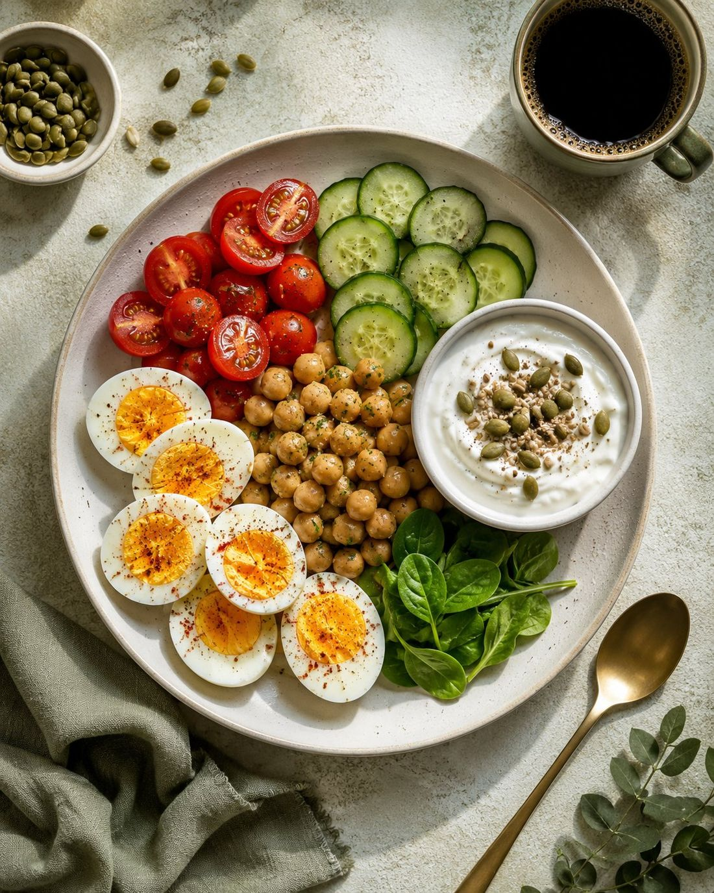

1.1
Boiled Egg, Yogurt and Chickpea Breakfast Tray
صينية فطار البيض المسلوق بالزبادي والحمص
A colourful tray that brings protein and fibre together
فطار ملوّن يجمع البروتين والألياف في صينية واحدة
This varied breakfast tray pairs seasoned eggs and crisp vegetables with creamy seeded yogurt and tender chickpeas. Its mix of protein, fibre and healthy fats offers lasting satisfaction, while the contrasting textures keep every bite interesting.
صينية فطار متنوّعة فيها بيض متبّل وخضار مقرمش، مع زبادي كريمي بالبذور وحمص طري. مزيج البروتين والألياف والدهون الصحية بيدي شبع ثابت، وكل عنصر فيها له طعم وقوام مختلف يخلي الوجبة ممتعة.
Ingredientsالمكونات
- 3 largeHard-boiled eggs, peeledبيض مسلوق ومقشّر
- 1/4 tspFine saltملح
- 1/8 tspBlack pepperفلفل أسود
- 1/4 tspChilli flakesشطة مجروشة
- 6Cherry tomatoes, halvedطماطم شيري مقطّعة نصين
- 1/2 smallCucumber, slicedخيار مقطّع شرائح
- 3/4 cup, about 170 gGreek yogurtزبادي يوناني
- 1 tbspPumpkin seedsبذور قرع
- 1/2 tspNigella seedsحبة البركة
- 1/2 cupCooked chickpeas, drainedحمص مسلوق ومصفّى
- 1 small cup, about 120 mlBlack coffeeقهوة سادة
Methodالطريقة
- Halve the eggs, arrange them on one side of the tray and season with the salt, pepper and chilli flakes.اقطعي البيض نصين، ورصّيه في ناحية من الصينية، ثم رشّي عليه الملح والفلفل والشطة المجروشة.
- Arrange the cherry tomatoes and cucumber beside the eggs, keeping each element distinct and easy to pick up.رتّبي أنصاف الطماطم وشرائح الخيار جنب البيض بحيث يفضل كل نوع واضح وسهل الأكل.
- Spoon the yogurt into a small bowl and scatter the pumpkin and nigella seeds over the top.حطّي الزبادي في سلطانية صغيرة، ورشّي فوقه بذور القرع وحبة البركة.
- Add the yogurt bowl and chickpeas to the tray, then serve with the black coffee.ضيفي سلطانية الزبادي والحمص للصينية، وقدّميها كاملة مع فنجان القهوة.
Tipنصيحة
Rinse canned chickpeas and drain them thoroughly before serving to remove excess liquid and its flavour.
اشطفي الحمص المعلّب وصفيه كويس قبل التقديم عشان تتخلّصي من السائل الزائد وطعمه.
Swapبديل
Swap the chickpeas for 1/2 cup cooked brown lentils for a different source of protein and fibre.
بدّلي الحمص بنص كوب عدس بني مسلوق لو عايزة تنويع بنفس فكرة البروتين والألياف.